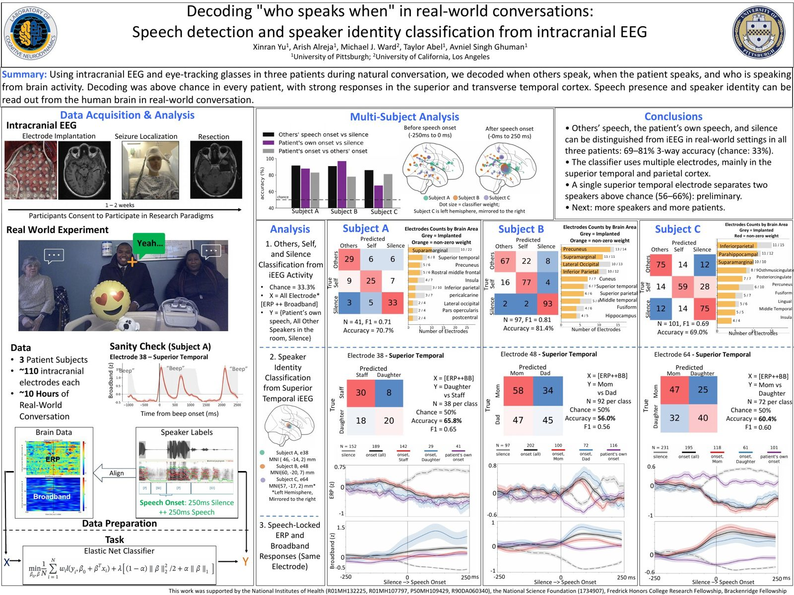
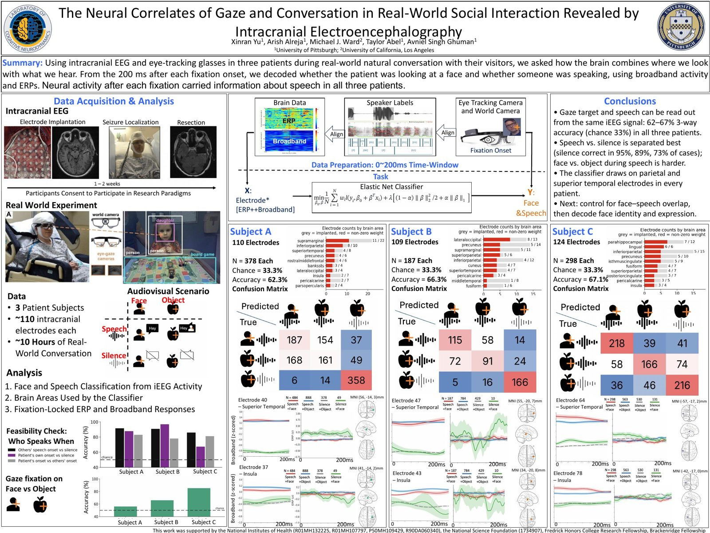

APAN 2026 · SfN Neuroscience 2026
Listening and looking in real-world conversation
Xinran Yu, Arish Alreja, Michael J. Ward, Taylor Abel, Avniel Singh Ghuman
University of Pittsburgh · University of California, Los Angeles
We recorded intracranial EEG from three patients while they talked with visitors, and asked what the brain keeps track of: who is speaking, and where we look. Two posters, one dataset.
The two posters
Tap a poster to open the full PDF. Preliminary results, not peer reviewed.
APAN · Poster #124 · Fri 11/13, 4:30–6 PM
Decoding “who speaks when” in real-world conversations
Speech detection and speaker identity classification from intracranial EEG
- Others’ speech, the patient’s own speech, and silence can be told apart from iEEG in all three patients: 69–81% 3-way accuracy (chance 33%).
- The classifier uses multiple electrodes, mainly in superior temporal and parietal cortex.
- A single superior temporal electrode separates two speakers above chance (56–66%): preliminary.

Same three patients, same conversations. The first poster asks who is speaking. The second adds where the patient is looking.
SfN · Neuroscience 2026
The neural correlates of gaze and conversation in real-world social interaction
Revealed by intracranial electroencephalography
- A 3-way classifier on the 200 ms after each fixation onset reaches 62–67% accuracy (chance 33%) in all three patients.
- Speech vs. silence is separated best (silence correct in 95%, 89%, 73% of cases); telling a face from an object during speech is harder.
- Next: control for the overlap between faces and speech, then decode face identity and expression.
